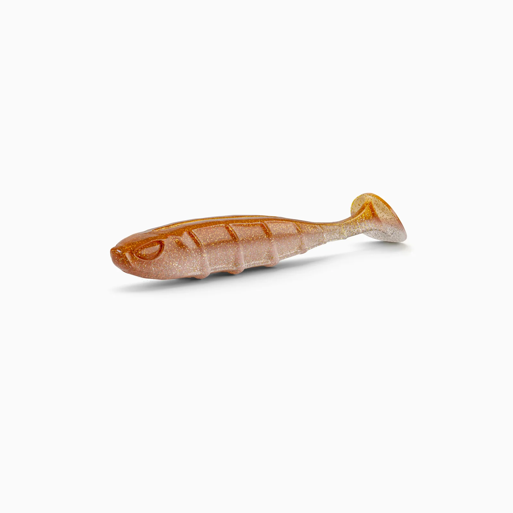
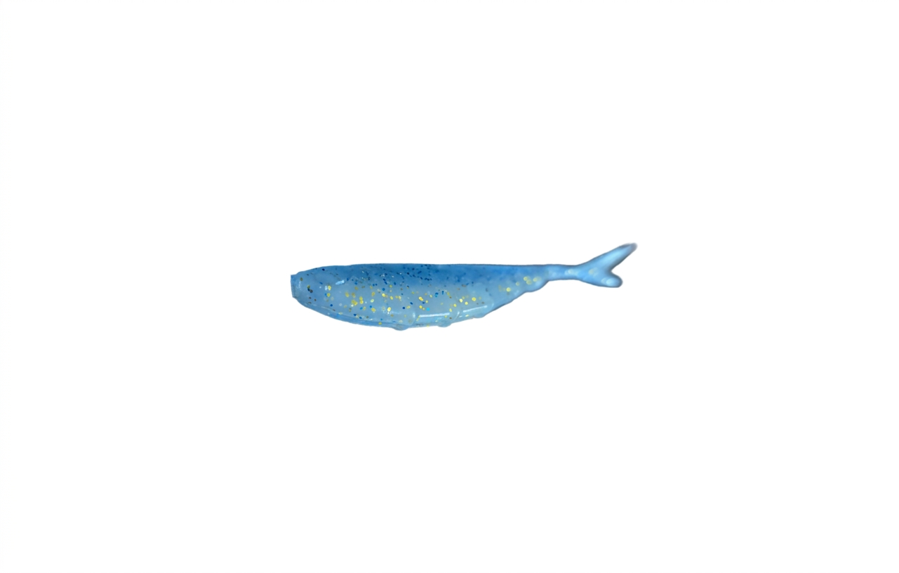
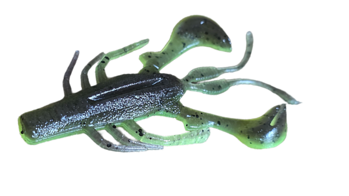
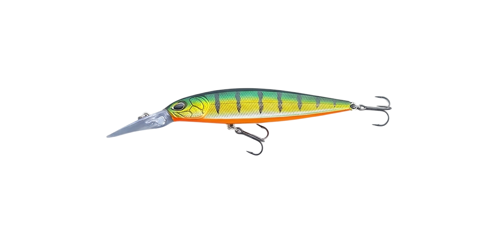
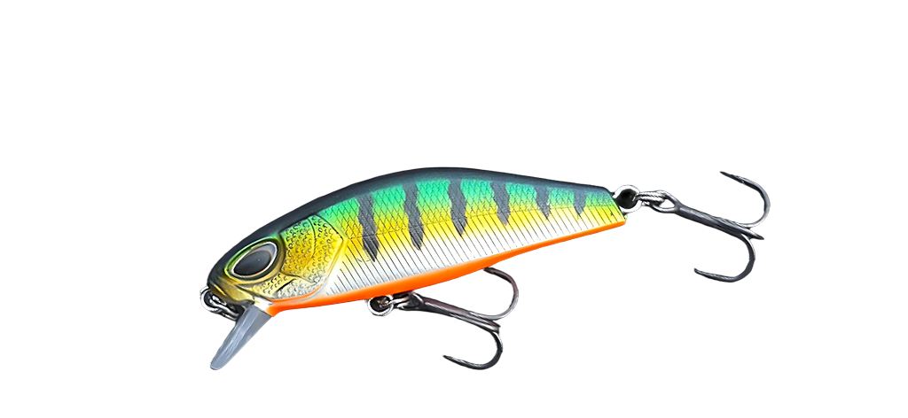
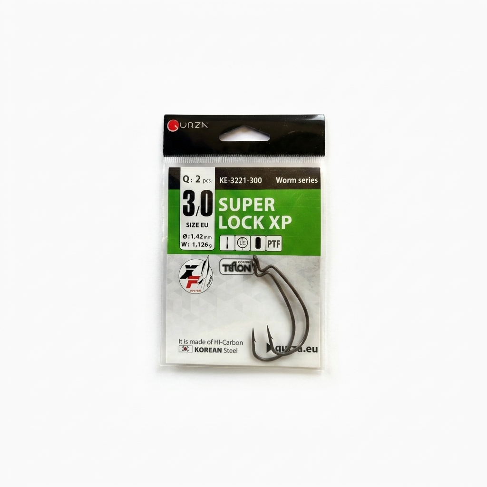
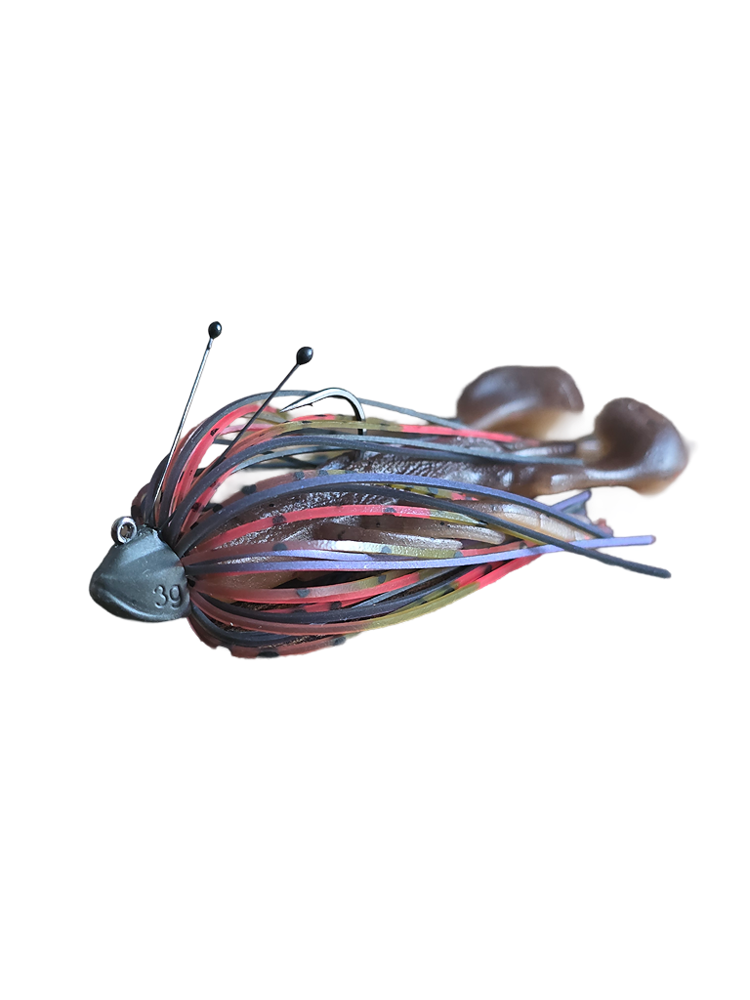

Nays Lures

Nays VNM 20
Mein Go-To Softbait für maximale Action auf Barsche.
Softbaits100% Nays Baits, combined with KDM/JDM Terminal Precision.

Mein Go-To Softbait für maximale Action auf Barsche.
Softbaits
Mein Go-To No-Action Shad für maximale Action auf Barsche.
Softbaits
Meine Go-To Craw für maximale Action auf dicke Barsche gepart mit dem Nays DLT Type1.
Softbaits
Bester Twichbait für Barsche
Hardbait
Kleiner Hardbait für Barsche
Hardbait
Sehr schafe Offset Haken aus koreanischem Stahl gefertigt
Terminal TackleSehr schafe Micro JIG/DART HEAD
Terminal Tackle
Skirted Jig mit sehr schafem BKK Haken.
Terminal Tackle